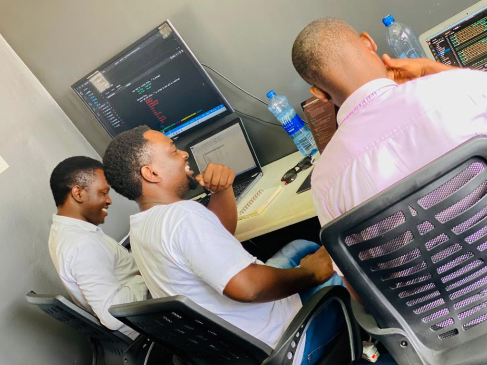

How to Become a Software Engineer?
Becoming a software engineer is an exciting and challenging journey. With the constant advancements in technology, there is always something new to learn in this field. If you're interested in pursuing a career as a software engineer, there are a few things you should consider.
First and foremost, you'll need to learn how to code. There are many different programming languages out there, each with its own set of strengths and weaknesses. Some of the most popular programming languages include Java, Python, and JavaScript. It's a good idea to start with one of these languages and become proficient in it before moving on to others.
Everybody should learn to program a computer because it teaches you how to think. – Steve Jobs
Networking is also important in the software engineering field. Attend networking events, participate in online forums, and connect with other software engineers on social media platforms. This will help you stay up-to-date on industry trends and potentially lead to job opportunities.
A Guide for Those Starting From Scratch (Self-directed learning).
There is also a range of self-directed learning opportunities to explore for those who prefer less formal academic options. For instance, learners can pick up necessary coding skills via free educational websites. In addition to being cost-effective, these classes are designed to suit self-guided instruction and scheduling, making them highly personalized by default.
But the flexibilities provided by self-directed learning come at a cost. Those who choose to learn independently don’t have the accountability a set schedule or formal instructor offers; rather they are responsible for keeping themselves on track and productive. While this approach may work well for some, those who are less self-motivated may find themselves falling behind on their upskilling timetable.
How Long Does It Take to Become a Software Engineer?
The answer depends on you! The time required to become a software engineer will vary based on your desired academic route. For example, a typical college education, such as a degree in computer science, takes around four years to complete and spreads instruction out across seasonal semesters. The pursuit of a degree is a slow but thorough process, and graduation stands as a notable achievement.
However, if you want to get started with a job in coding sooner and get valuable job experience while you continue to work toward completing the required skill sets of software engineers, you can also consider enrolling in a bootcamp or learning on your own. Most bootcamp courses range from three to six months. During this time, instruction is often quick and intensive, focusing on helping learners build job-ready web development skills as quickly as possible.
Independent learners face the most uncertainty when it comes to establishing timelines. Generally speaking, motivated learners could teach themselves coding basics within a year or so — however, this span can grow or shrink according to their self-imposed schedule, availability, and aptitude for independent study.
What Exactly Is Software Engineering and What Do Software Engineers Do?
Software engineering broadly refers to the practice of building, maintaining, and improving computer software and networking systems. Software engineers, in turn, have extensive knowledge of coding languages, software development, and engineering principles.
By applying such principles, software engineers conduct complex analyses to develop customized systems and software products based on their clients’ unique demands. This process is usually preceded by intensive studying of specified system requirements and limitations.